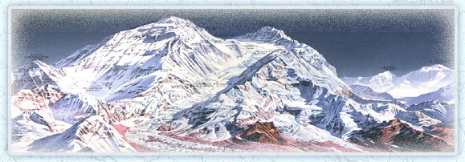
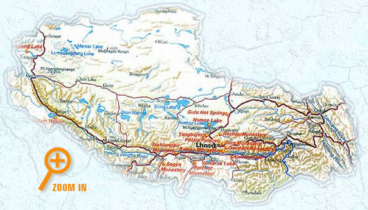
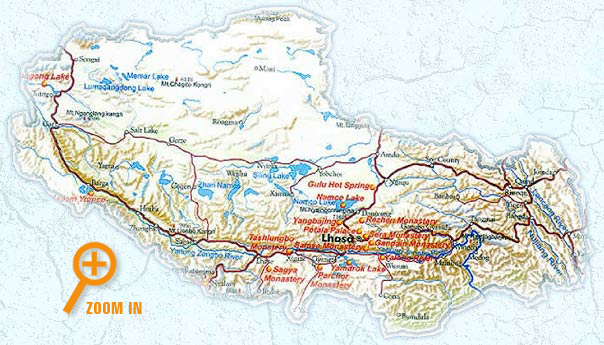

Tibet, often called "The Roof of the World", is home to Mount Everest,
the highest mountain on earth at 29,035 feet.
Even though the region is surrounded by the snowy Himalayas to the south, the Karakoram Range to the west, and the Kunlun Mountains to the north, people from all over the world make the trek through Tibet to reach and climb the world’s tallest peaks. However, prior to the middle of the twentieth century, Tibet, with its treacherous mountain passes, was virtually isolated from the rest of the world, making its history and culture unique.
Situated in the southwestern part of China, Tibet shares its southern border with Myanmar, India, Bhutan, and Nepal. It is bordered on the north by Xinjiang Uygur Autonomous Region and Qinghai Province, and on the east by Sichuan and Yunnan provinces, all Chinese provinces. The total land area of Tibet is 470,000 square miles; it appears like the shape of a shoe.
Erik, his teammates and the filmmakers traveled first to Lhasa, Tibet’s capital. It is in this city of over 200,000 people that Sabriye Tenberken founded a school for the blind.



- Lhakpa-Ri peak, the goal of the expedition, is
23,000 feet high.
- The name Lhakpa-Ri means "Stormy Mountain".
- Everest in Tibetan is "Chomalungma", which means "Mother Goddess of the Universe"
- The North face
(Route: Northeast Ridge) of Everest is in Tibet and it was first climbed in
1960 by Shih Chan-chun and his team of 214 Chinese and Tibetan men and women.
- The South side (Route: Southeast Ridge) is in Nepal and was
first climbed by Sir Edmund Hilary and Sherpa Tenzing Norgay in 1953.
- Lhakpa-Ri was first climbed in 1921 by George Mallory.
- Percentage of oxygen at altitudes compared to sea level:
Oxygen at sea level = approximately 23% of air
Oxygen in Lhasa (altitude 3,650m /12,000 ft) = 11.5% of air.
Oxygen at the summit of Everest (altitude 8,850m/29,035 ft)= 7.7% of air
- The highest peaks on each continent are :
29,035-foot Mount Everest (Asia)
22,840-foot Mount Aconcagua (South America)
20,320-foot Mount McKinley (North America)
19,339-foot Mount Kilimanjaro (Africa)
18,510-foot Mount Elbrus (Europe)
16,067-foot Vinson Massif (Antarctica)
7,316-foot Mount Kosciuszko (Australia)
- Lhakpa-Ri is higher than any peak outside of the Himalayas.
- Blind climber's altitude record: Erik Weihenmayer, Mt Everest, 29, 035 feet.
- 20% of people who have ever attempted to summit Everest have died in the process.
 
